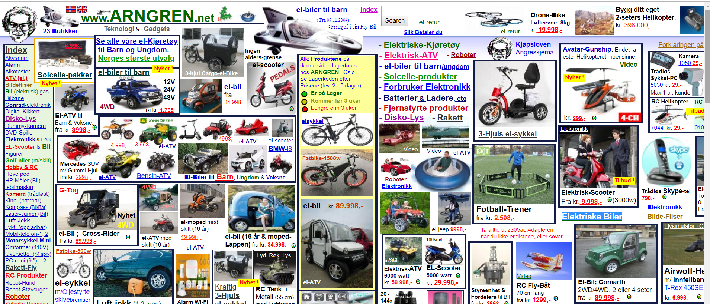

No one wants to get lost, we all want to get where we need to go as easily as possible. Civil engineers design roads, freeways, and infrastructure to get drivers to their destinations as quickly and efficiently as possible. User experience teams are designing websites to get users to their destinations, purchases or the information they need as smoothly as possible. At least, that’s what they aim to achieve.
Great civil engineers and user experience teams focus on developing the best navigation tools that get users easily where they need, want and desired destination. I’m not a civil engineer or user design expert but Steve Krug is. He provides a common sense approach to web usability in his book “Don’t make me think, a common sense approach to web usability.”
Essentially, effective navigation is an effective website. Steve Krug walks readers through what he considers what “websites need to get right” to get users to their destination without getting lost. He discusses the importance of website navigation to provide strong user experiences by creating “the preverbal clear, simple, and consistent navigation.” This post is dedicated to what we need to get right of user experience, navigation and evaluating a sites user experience.
Website Introduction
Arngren is a Norwegian website that sells electronics, ATV, drones, electric cars, bikes, and purchases electric goods from sellers. http://arngren.net/
Metrics and Evaluation
The criteria for evaluation of Arngren.net have the ability to earn 3 points. The criteria used for evaluation are as follows:
- Navigation Objectives: Does the website tell people what the site contains, how to use the site, and build consumer confidence and leave a good impression.
- Web Conventions: Does the website have a site id, utilities, sections, local navigation, footer navigation, page names, search option?
- Consistent Navigation: Does each page have consistent navigation, a home button taking users to the home page, page names, and search option on every page?
- The Trunk Test: If the viewed from a distance on a printed page can users easily identify the site id, page name, major sections, options for local navigation, where users are based on bread crumbs, and search bar.
Evaluation Results for Arngen.net
Arngren.net was evaluated on four criterion. Each criterion has the potential to score 3 total points per criteria to yield a maximum score of 12. Arngren.net received a score of 3/12.
Strengths of the Website Arngen.net makes effective use of a site id, logo and local navigation sections. The strengths could be amplified by creating a distinctive page header distinctive from the products by removing product options from the top of the page.
Website Improvements Leaving a good impression with a well-organized website with simple to use navigation is the fundamental purpose of a website. In order for Arngen.net can to leave a good impression. The web conventions, main sections, need improvement. The site id needs to be larger. Utilities, footer navigation, primary navigation, clear page names, large page names, breadcrumbs and highlights for previously used navigation are needed as well.
Navigation Results:
Navigation Objectives 0/3
Website Navigation Conventions 1/3
Consistent Navigation 1/3
The Trunk Test 1/3
The Criteria for Evaluation of Arngren.net
Navigation Objectives
Navigation Objectives A great website tells the user what the site contains has easy navigation and leave a good impression on the. Arngen.net doesn’t tell the user what the purpose of the website which is conveyed with a tagline, description page and effective utilities. It doesn’t leave the best impression due to the lack of effective introduction to the website, lack of directions or effective web conventions which I will discuss later.
Navigation Website Conventions
A great website easily navigates users with the use of effective web conventions. Krug states “Putting them [web conventions] in a standard place lets us locate them quickly, with a minimum of effort; standardizing their appearance makes it easy to distinguish them from everything else.” The web conventions aren’t included on the Arngren.net website. The conventions that are included such as site id, local navigation products aren’t easy to find or distinguishable due to the product organization. The product selection options are not in a designated area but cover the entire page.
Consistent Navigation
Website users want to know that they are on the same site while navigating a website. The importance of getting it right discusses the importance of consistent navigation, keeping the navigation the same on each page, in the same place, and the navigation including four elements- id, utilities, search and sections. Consistent navigation is an improvement point. Arngren.net includes the site name, home button but doesn’t include what Krug considers global navigation.
Trunk Test

Effective websites can pass Krug’s trunk test. According to Krug, “If the page is well designed, when your vision clears you should be able to answer these questions without hesitation:
- What site is this? (Site ID)
- What page am I on? (Page name)
- What are the major sections of this site? (Sections)
- What are my options at this level? (Local navigation)
- Where am I in the scheme of things? (“You are here” indicators)
- How can I search?
Arngren.net doesn’t pass the trunk test. The image has the major sections of the site in red. When reviewing the website by major sections, Arngen.net doesn’t have the information in the major section. The navigation sections aren’t prominently on the page. Indicators letting users know where they are on the website.
Strengths of the Website
Arngen.net makes effective use of a site id, logo and local navigation sections. The strengths could be amplified by creating a distinctive page header distinctive from the products by removing product options from the top of the page.
Website Improvements
Leaving a good impression with a well-organized website with simple to use navigation is the fundamental purpose of a website. In order for Arngen.net can to leave a good impression. The web conventions, main sections, need improvement. The site id needs to be larger. Utilities, footer navigation, primary navigation, clear page names, large page names, breadcrumbs and highlights for previously used navigation are needed as well.